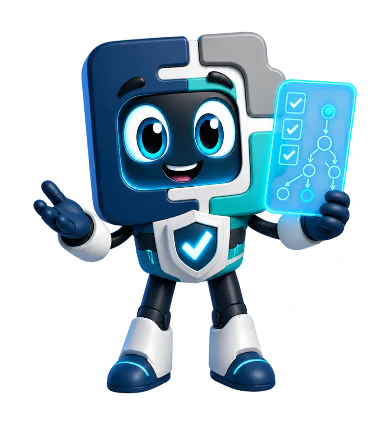

Estudiantes y egresados
Complementa tu formación académica con práctica en calidad de software, pruebas y evidencias profesionales.
Te acompaño para entender, practicar y llevar cada concepto al trabajo real.
Curso de QA y testing online
Estudia online y en español desde Venezuela, El Salvador o cualquier país de Latinoamérica. Avanza por siete niveles y crea evidencias que demuestren lo que sabes hacer.
Formación QA para comenzar y crecer
No necesitas llegar sabiendo testing. Empiezas con una base clara y avanzas hacia las capacidades que se utilizan en proyectos reales de software.
Complementa tu formación académica con práctica en calidad de software, pruebas y evidencias profesionales.
Prepárate para postular a oportunidades junior con fundamentos, testing manual y pruebas de API.
Avanza hacia automatización, performance e inteligencia artificial aplicada a QA.
Una ruta · Tres momentos
Calidad, SDLC, roles, riesgo y mentalidad QA.
Escenarios, casos, datos, defectos y evidencias trazables.
Servicios, contratos, datos y flujos de integración.
Automatización sostenible, mantenible y orientada al riesgo.
Capacidad, concurrencia, estabilidad, carga y análisis.
IA generativa aplicada al trabajo real de calidad.
Agentes y flujos inteligentes con control humano.
Cómo vas a aprender
QAIRO organiza cada sesión para que la teoría nunca se quede sola. Avanzas paso a paso y cierras con una evidencia que demuestra tu aprendizaje.
Comprendes el porqué.
Lo ves en contexto.
Lo ejecutas con guía.
Resuelves por tu cuenta.
Lo sumas a tu portafolio.
QAIRO dentro de cada curso
Cada aparición de QAIRO cumple una función académica concreta y conecta el contenido con decisiones de un proyecto real.
Concepto sencillo y claro.

Ejemplo basado en un proyecto.
Recomendación para evitar errores.

Aplicación en un equipo QA real.
Tu experiencia continúa
Estudia con orden, recupera cada clase y ten siempre claro cuál es tu siguiente paso. QAIRO te acompaña con explicaciones, ejemplos, tips y retos durante tu avance.
Preguntas frecuentes
Sí. Los niveles 01, 02 y 03 están organizados para construir fundamentos, aprender testing manual y comenzar con pruebas de API sin exigir experiencia previa en QA.
La formación es online y en español para Venezuela, El Salvador, Bolivia, Panamá, República Dominicana, Guatemala, Honduras, Nicaragua, Paraguay, Perú, Colombia, Ecuador y otros países de la región.
Aprenderás fundamentos de calidad, ciclo de desarrollo, análisis de requerimientos, escenarios y casos de prueba, datos, defectos, evidencias y pruebas de servicios API.
La inversión se comunica por nivel y convocatoria. Si estás fuera de Perú, recibirás el precio y las opciones de pago disponibles en USD antes de confirmar tu matrícula.
No. La formación desarrolla competencias, práctica y evidencias para fortalecer tu perfil, pero cada proceso de selección depende de la empresa y del desempeño de la persona candidata.
Da el siguiente paso
Cuéntanos desde qué país escribes, tu experiencia actual y el objetivo que quieres alcanzar.